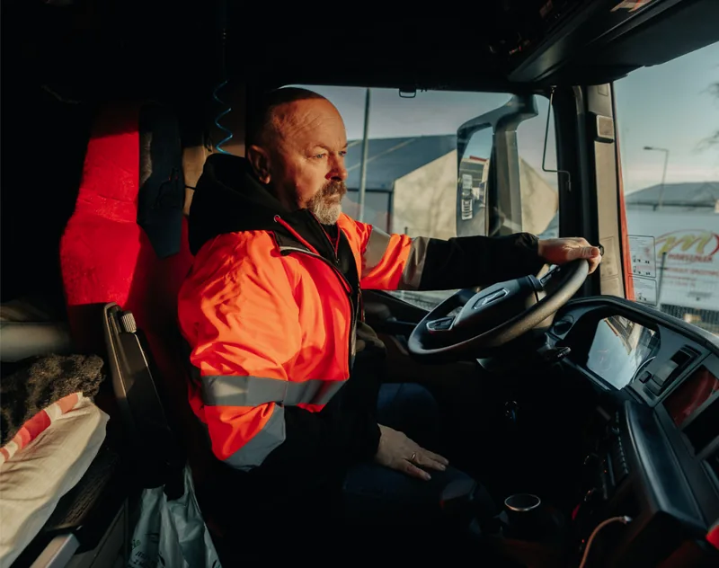

Image block
A frame with a fixed shape and a picture that fills it. Five aspect ratios, no states, no chrome.
DownloadHTML6 KBCSS1 KBSpec4 KBHTML with all five ratios and a failed picture in both themes, CSS for the frame and placeholder, and a Markdown spec of this page.
LearnWhen to reach for it, and a live one to try.
When to use
Use it for
- Photographs in cards, lists and page headers.
- Hardware renders and diagrams that sit in a layout.
- Thumbnails and avatars (Avatar uses the 1:1 block).
Try it
Change the ratio, the picture, the container and the width.
Aspect ratio
Picture
Container
Width
The frame keeps its shape; the picture is cropped to fit. “Fails to load” leaves the placeholder, never a broken-image icon.
Light

Dark
UnderstandWhat it does by itself, and the choices you make.
Behaviour
What the Image block does by itself.
- The frame never changes shape for the picture. The picture is scaled to cover and cropped from the centre. A portrait photo in a 16:9 block is cropped, not letterboxed.
- The space is held before the picture arrives. The frame takes its size from the layout width and the ratio, and image/placeholder fills it while the file loads, so nothing moves.
- A failed picture leaves the placeholder. Never a broken-image icon. The alt text is still read out.
- No picture, no block. An empty frame is not a state. Leave the block out.
- The browser picks the file size. Two sizes are served, so a 320px thumbnail does not download a 1,400px file.
It crops, it never squashes
The same portrait-ish photograph in three ratios. Each frame keeps its shape.
Light
16:94:31:1
Dark
16:94:31:1
Guidelines
The choices you make, and why.
- Choose the ratio from what the picture is for. Not from the picture you happen to have. If the crop loses the subject, pick a different picture.
- Keep one ratio per row or grid. Mixed ratios do not line up.
- Load lazily below the fold, eagerly above it. A hero picture should never be lazy.
- Follow the imagery rules. Real people, real sites, natural light. Renders are for hardware. See Imagery.
- Write alt text that says what is shown. Or leave it empty when the text beside the picture already says it.
Do not
- Stretch, skew or letterbox a picture.
- Put text on a picture without a scrim.
- Use the block for icons or logos.
- Show a broken-image icon.
- Mix 3:2 and 16:9 in one grid.
Building itAnatomy, options, states, numbers and code, for designers and developers.
Anatomy
- FrameA box with a fixed aspect ratio. Width comes from the layout; height follows the ratio. Clips the picture.
- Placeholderimage/placeholder fill under the picture. Shows while loading and if the picture fails.
- PictureFills the frame, scaled to cover, cropped from the centre. Never stretched.
- RadiusNone of its own. The container sets it: 16 in a card, 8 in a list row, 0 when it bleeds to the edge.
Options
One property: aspect ratio. Shown here in a list row (radius 8).
Light
16:95:33:24:31:1
Dark
16:95:33:24:31:1
| Ratio | Use it for | Figma frame |
|---|---|---|
| 16:9 | Hero images, video posters, anything that reads as a screen | 178 x 100 |
| 5:3 | Photographs in cards and lists; the default for brand photography | 167 x 100 |
| 3:2 | Photographs from a camera at their native shape | 150 x 100 |
| 4:3 | Diagrams, hardware renders, anything taller than a photo | 133 x 100 |
| 1:1 | Thumbnails, avatars, anything in a grid | 100 x 100 |
States
No interactive states. A link or card around it carries hover and focus. What it shows depends on the picture:
Light
LoadingLoadedFailed
Dark
LoadingLoadedFailed
| Condition | When | What shows |
|---|---|---|
| Loading | The file has not arrived | The placeholder, at the final size |
| Loaded | The picture is in | The picture covers the placeholder |
| Failed | The file did not load | The placeholder stays; alt text is still read |
| No picture | There is nothing to show | Do not render the block |
Specs
| Part | Token | Light | Dark |
|---|---|---|---|
| Ratios | aspect ratio | 16:9 · 5:3 · 3:2 · 4:3 · 1:1 | Same |
| Fit | object-fit | Cover, centred | Same |
| Placeholder | image/placeholder | #DFDEDD (neutral/100) | #2F2D28 (neutral/850) |
| Radius | From the container | 16 / 8 / 0 | 16 / 8 / 0 |
| Loading | loading | Lazy below the fold, eager above | Same |
| Sizes | srcset | Layout width and 2x | Same |
Accessibility
- Every picture has an alt. It says what is shown when the picture carries information, and is empty (alt="") when the text beside it already says it.
- Alt text does not start with “image of”. The screen reader already says that.
- A picture inside a link takes its name from the link text or the alt, never both.
- Text over a picture needs a scrim that measures 4.5:1 with the text at the picture’s lightest point, or the text goes beside it.
- Reserved space helps people using magnification: the layout does not jump while pictures load.
The block has no text of its own. The placeholder is decorative and exempt; the picture’s alt text carries the meaning.
| Pair | Foreground | Background | Ratio | Needs | Result |
|---|---|---|---|---|---|
| Placeholder on page, light | #DFDEDD | #FFFFFF | 1.34:1 | None | Exempt |
| Placeholder on page, dark | #2F2D28 | #171614 | 1.31:1 | None | Exempt |
In Angular
| Selector | Inputs | Outputs | What it handles for you |
|---|---|---|---|
| <vf-image> | src, srcset, sizes, alt (required, may be empty), ratio (16:9, 5:3, 3:2, 4:3, 1:1), eager (default false) | error | A <figure> with aspect-ratio and the image/placeholder fill; loading="lazy" unless eager; keeps the placeholder on error. Never renders without an alt attribute. |
Known gaps
None open.